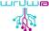
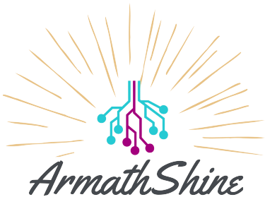

Համակարգչային ծրագիրը իրականացնում է առաջին համահայկական քաղաքացիական Համաժողովի
մասնակիցների
վիճակահանությունը՝ ապահովելով թափանցիկություն և հասարակության բոլոր շերտերի ներկայացվածություն։
Ծրագրի ստեղծմանը մասնակցել են՝
-Առաջատար Տեխնոլոգիաների Ձեռնարկությունների Միությունը (UATE),
-Վարդենիսի ավագ դպրոցի «Արմաթ» ինժեներական լաբորատորիան (armath-shine),
Ծրագրի ստուգումը իրականացրել է Հայաստանի Ամերիկյան Համալսարանը (AUA),
Վիճակահանության սոցիոլոգիական ընտրանքը կազմել է Breavis խորհրդատվական ընկերությունը:

